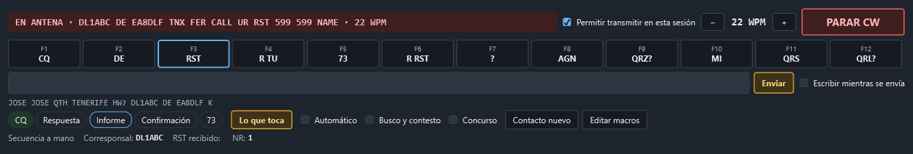
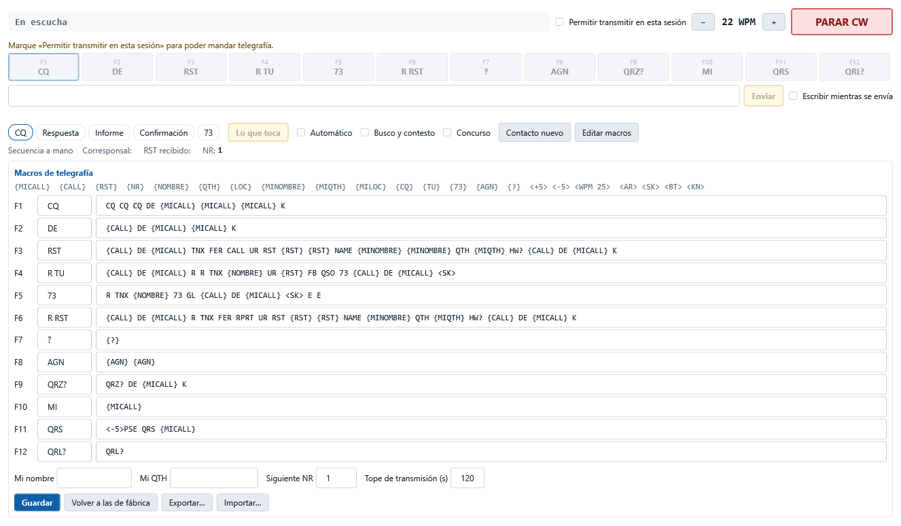

Transmitir en CW
La zona Transmitir en CW manda telegrafía desde el cuaderno: doce macros en las teclas F1 a F12, un renglón para escribir lo que quiera y una secuencia del contacto que puede ir sola, como la del FT8 del módem propio.


La telegrafía la genera la radio, no el ordenador. El cuaderno le pasa el texto al manipulador interno del equipo por CAT; el PC no produce ningún audio. Por eso hace falta un equipo que sepa manipular por CAT:
| Equipo | Cómo se manda |
|---|---|
| FT-710 | El texto se escribe en la memoria de texto 5 del manipulador (KM5…;) y se reproduce (KY05;), en trozos de 50 caracteres. Lo que tenía esa memoria se le devuelve al terminar. |
| ICOM (CI-V) | Orden 17 con hasta 30 caracteres; 17 FF para. |
| Hamlib (rigctld) | send_morse; stop_morse para. Depende de que Hamlib sepa hacerlo con su equipo. |
| Los demás Yaesu, OmniRig | No: el botón queda apagado y se dice por qué. |
Antes de transmitir: las cinco puertas
Nada sale al aire sin pasar por todas, en este orden:
- Permitir transmitir en esta sesión marcado. Es el mismo pestillo del módem digital: empieza cerrado en cada arranque y no se guarda.
- Un equipo que manipule por CAT, conectado. Si no, la línea amarilla dice por qué.
- El equipo en CW. Si está en otro modo, se pregunta antes de cambiarlo; si dice que no, no se transmite.
- La pregunta de transmitir, con el texto que va a salir. Tiene el mismo «No volver a preguntar» que el módem (se vuelve a encender en Configuración › Audio y digitales).
- El vigilante del PTT, que es quien sube y baja la antena, como en todo el programa, con sus salvaguardas: plan de banda, ROE y potencia por banda.
Nunca se transmite al arrancar ni al conectar: solo con una tecla o un botón suyo, o con el automático que usted ha encendido en esta sesión.
Parar: Esc o PARAR CW
Esc o el botón rojo PARAR CW cortan en el acto: mandan la orden de parar al manipulador del equipo y bajan el PTT. Esc funciona en cualquier página mientras haya algo saliendo o el automático puesto. Además:
- Hay un tope de transmisión (120 s de fábrica, se cambia en el editor de macros). Pasado, se corta. Detrás sigue el tope del vigilante del PTT, que no depende de nada.
- Cualquier bajada del PTT —la normal, el tope, el pánico, perder el equipo, cerrar el programa— para antes el manipulador: con el break-in puesto, la radio podría seguir manipulando sola.
- Cerrar el pestillo también corta lo que esté saliendo y apaga el automático.
Las macros
Cada botón es una macro; su tecla F la manda. La que toca en la secuencia sale recuadrada.
Variables que se rellenan al mandar:
| Variable | Qué pone |
|---|---|
{MICALL} | Su indicativo (el del perfil de estación activo). |
{CALL} | El indicativo del Contacto nuevo. |
{RST} | El RST que da (599 si no hay otro; en concurso, 5NN). |
{NR} | El número de serie, con tres cifras. |
{NOMBRE} {QTH} {LOC} | Nombre, QTH y localizador del corresponsal. |
{MINOMBRE} {MIQTH} {MILOC} | Los suyos. |
{CQ} {TU} {73} {AGN} {?} | CQ (CQ TEST en concurso), TU, 73, AGN, ?. |
Velocidad dentro de la macro: <+5> y <-5> suben o bajan desde ahí hasta el final; <WPM 25> la pone fija. Prosignos: <AR>, <SK>, <BT>, <KN>.
Si una macro usa {CALL} y el contacto nuevo no tiene indicativo, no se manda y se avisa.
La velocidad de partida se cambia con − y + (de 2 en 2 WPM).
Dos juegos: QSO normal y concurso
- QSO normal: F1 CQ, F2 contestar a un CQ, F3 informe con nombre y QTH, F4 confirmación y 73, F5 despedida, F6 informe con R (cuando contesta usted), y de F7 a F12 ?, AGN, QRZ?, su indicativo, QRS y QRL?.
- Concurso (casilla Concurso): F1 CQ TEST, F2 intercambio (5NN y número), F3 TU, F4 su indicativo, F5 el del otro, F6 repetir el intercambio… Al estilo de N1MM.
Editar, guardar, exportar
Editar macros abre el editor: rótulo y texto de cada una, su nombre, su QTH, el siguiente número de serie y el tope de transmisión. Guardar las deja en el fichero transmision-cw.json de la carpeta de datos. Volver a las de fábrica repone el juego en uso. Exportar… e Importar… pasan los dos juegos a un fichero y de un fichero.


Escribir a mano
El renglón de texto manda lo que escriba al pulsar Intro o Enviar (admite las mismas variables). Con Escribir mientras se envía, cada palabra sale en cuanto teclea su espacio, detrás de lo que esté saliendo: puede ir escribiendo mientras la radio manipula. Debajo se ve lo que falta por salir.
La secuencia del contacto
La tira CQ → Respuesta → Informe → Confirmación → 73 dice en qué paso está el contacto y cuál toca (recuadrado). Lo que toca —o Intro con el renglón vacío— manda las macros de ese paso: es el Enter Sends Message de N1MM.
- Llamando (lo normal): CQ → le contesta alguien → informe → su informe → confirmación, y el contacto queda completo.
- Busco y contesto (casilla): contestar al CQ de otro → su informe → su informe con R → su despedida → 73. En concurso se completa con el intercambio.
La secuencia avanza con lo que lee el decodificador de la página CW:
- si oye su indicativo seguido de otro («EA8DLF DE DL1ABC»), o solo un indicativo tras su CQ, toma ese como corresponsal y lo pone en el Contacto nuevo;
- de su informe saca el RST, el nombre (NAME, OP), el QTH y el localizador, y en concurso el número (con los números cortados: T = 0, N = 9…);
- espera a que el otro termine (un
K,KN,<AR>… o un silencio) antes de contestar; - un «?», «AGN», «NR?»… hace repetir lo último;
- si el otro está con otra estación, no se mete.
Mientras usted transmite, lo que lee el decodificador (su propio tono de escucha) no cuenta.
Automático
Con Automático, la secuencia contesta sola, como el «Tx habilitado» del FT8. Pasa por las mismas cinco puertas: si la pregunta de transmitir está puesta, se le pregunta cada vez. Si nadie contesta, repite lo último tras 12 s de silencio, hasta 3 veces, y luego se apaga solo. También se apaga al parar, al cerrar el pestillo o si se dice que no a una pregunta. Empieza apagado en cada arranque.
Al completar
Con el contacto completo, el Contacto nuevo queda relleno (indicativo, RST dado y recibido, nombre, QTH, localizador; en concurso, los números en el comentario). Si en Configuración › Audio y digitales está Registrar al completar —el mismo ajuste del FT8—, se apunta solo en el cuaderno; si no, queda listo para pulsar Registrar. Contacto nuevo vuelve la secuencia al principio sin borrar el formulario.
Antes de la primera vez con la radio
- En el FT-710, el cuaderno usa la memoria 5 del manipulador (menú CW SETTING › KEYER › CW MEMORY 5 en TEXT). Lo que tuviera se le devuelve al terminar cada transmisión.
- Ningún equipo dice por CAT cuándo ha terminado de manipular: el cuaderno lo calcula con la velocidad. Si cambia el peso (CW WEIGHT) del manipulador, los trozos largos pueden quedar algo más separados.